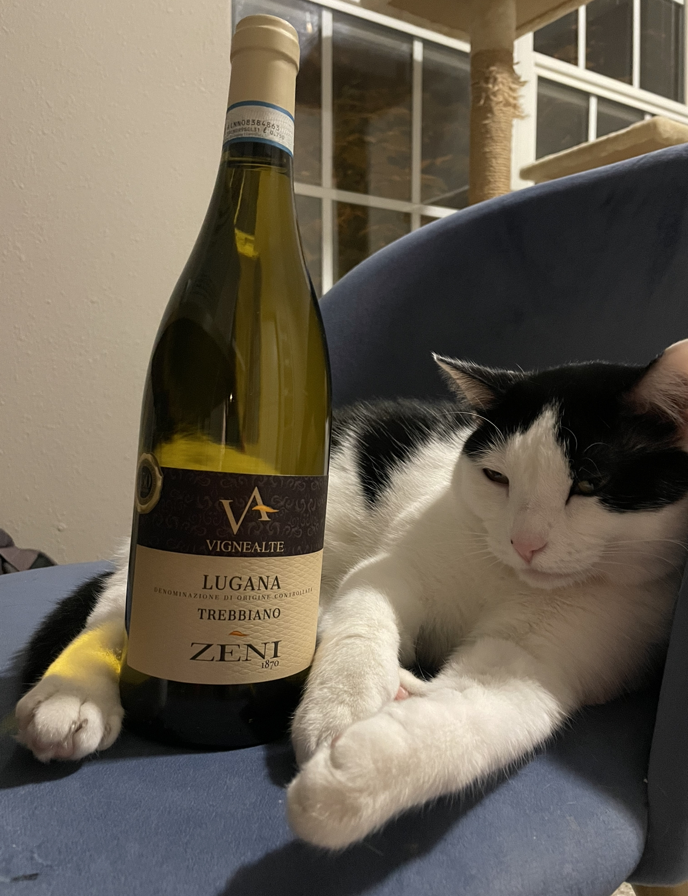

Trebbiano Toscano
What is it?
Trebbiano Toscano is one of the top grapes produced in France and Italy. However, many people haven't heard of this grape or don't know it is produced in such abundance as it is most commonly used in balsamic vinegars and brandies! Trebbiano Toscano has higher acidity than many grapes, which is why it is used in production of Cognac and such. It also has a higher yield than many grape varieties. In France, this grape is known as Ugni Blanc.
Primary flavors include white peach, lemon, green apple, seashell, and basil. Suggested pairings are white pizzas, roasted chicken, and pastas with creamy sauce or pesto. We had this wine with a pesto gnocchi.
Molly's Rating and Tasting Notes
7.8. On the nose, I get some peach and honey. The body is pretty full and almost juicy, with notes of lemon peel and salt. This is a pretty good white wine, I'd definitely drink it again and try a different variety.
Ryan's Rating and Tasting Notes
8.2 On the nose I get green apple, lemon pulp, sea spray, and possibly a little bit of star anise. Upon tasting, I am met with an amicable acidity and a decent dose of sweetness. Some of the tasting notes I get are peach, lemon, mandarin, pepper, and crushed gravel. There's a little bit of a savory/umami note at the end as well that balances well with the sweetness. The taste isn't similar, but the vibe is similar to hot honey on a pepperoni pizza. The finish lingers for a while which is welcome as the aftertaste is quite pleasant. The mouthfeel is a little bit on the heavier side for a white wine which complements the other aspects of the wine well. Overall, a good white wine that is maybe more suited for a nice dinner than a hot summer's day.
References
[1] Madeline Puckette and Justin Hammack. Wine Folly: The Master Guide. Avery - A Penguin Imprint, New York, NY, 2018.
[2] "Trebbiano Toscano." Wine Folly. https://winefolly.com/grapes/trebbiano-toscano/. Accessed: October 2023.
Wines we haven't finished
- None this week!